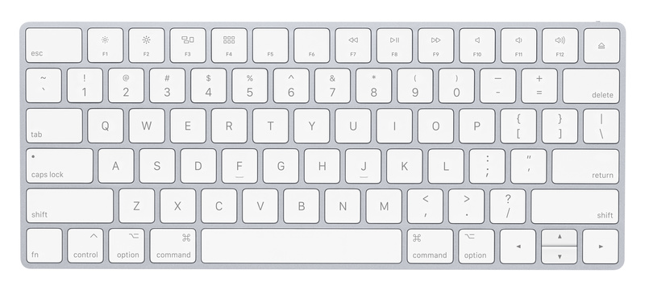

Про беспроводные клавиатуры от Apple

Ещё несколько слов о магии Apple, о которой многие любят рассказывать. Есть есть такая замечательная клавиатура - Apple Magic Keyboard. Работает через Bluetooth, использует батарейки или аккумуляторы AA, многим очень нравится и стоит на текущий момент в среднем от семи до девяти тысяч рублей. То, что просто положить их на полку и забыть о них на пару лет нельзя, я уже рассказывал в конце вот этого поста. Там для того, чтобы извлечь из новой, но неиспользовавшейся какое-то время клавиатуры батарейки, пришлось её сверлить. После экзекуций на клавиатуре перестали работать несколько клавиш. Покажите мне клавиатуру другого производителя, которая была бы оснащена подобной "функцией"! По-моему, только у apple новая клавиатура за 7+ тысяч рублей может выйти из строя, просто лёжа на полке. Я прямо восхищаюсь этой компанией! И это тоже не одиночный случай. Вот, недавно натолкнулся ещё на одну статью на хабре, описывающую ту же самую проблему: https://habr.com/ru/post/379771/. На этот раз сверлили и распиливали клавиатуру более удачно - она осталась жива. Конечно, это проблема скорее источников питания, чем клавиатуры как таковой. Но у меня подобные проблемы с батарейками возникали и в других клавиатурах. Там же достаточно было лёгким движением руки открыть крышку батарейного отсека, достать батареи и хорошо почистить контакты. Мне совершенно не нужны были для этих действий ножовка по металлу, молоток, отвёртка и дрель. Хотел пошутить про то, что для смены батареи или памяти в макбуке наверное скоро придётся пользоваться кувалдой и перфоратором, но вовремя вспомнил, что для этого теперь нужна паяльная станция, набор инструментов и неплохие навыки пайки мелких компонентов, хотя не уверен, что и это поможет - память теперь распаяна на плате и если вы хотите добавить или сменить память, вам нужно приобрести новый ноутбук. Замена батареи - тоже квест - банки залиты термоклеем. При неправильном прогреве для смены аккумуляторов можно довольно легко вывести макбук из строя.
Теги: mac, hardware, keyboards
Выпуск подкаста с моим участием по теме троичной логики и троичных компьютеров
Пару недель назад я принял участие в подкасте "Опытные на кухне". Я просто оставлю тут ссылку на выпуск.
Очистка старых смерженных веток в удалённом git репозитории

Не так давно по работе я столкнулся с задачей - необходимо было очистить большой репозиторий на гитхабе от всех веток, которые были полностью смержены в мастер, позднее, чем N дней. Для этого пришлось написать небольшой скрипт, который я просто оставлю ниже.
Теги: админское, shell, automatization
Про F-Droid и возможность качать видео и аудио с YouTube


На андроиде подавляющее большинство наших соотечественников пользуется приложениями, представленными исключительно в плей маркете. Кто-то что-то слышал о Яндекс.Store, ко-то возможно им даже пользовался, чаще всего это происходит лишь в том случае, если Яндекс.Store был предустановлен на устройство. Но мало кто из моих знакомых слышал об F-Droid. Конечно, он ориентирован на приложения с открытым исходным кодом, для большинства приложений нет скриншотов, а так же там нет бОльшей части того, чем мы привыкли пользоваться и что получаем из плей маркета. Это не замена плей маркету, а скорее приятное дополнение к нему.
Теги: android-soft
Про New York и глупые фантазии

Есть у меня одна фотография, которая уже наверное лет десять кочует со мной с одного рабочего стола на другой. Уж и не помню, где я её нашёл. Иногда я ловлю себя на том, что разглядываю её минут пять или больше и не могу оторваться. Я вглядываюсь в какое-нибудь окно ближайшего дома и пытаюсь представить, что за ним происходит сейчас и происходило в момент, когда было сделано это фото. Воображение рисует интерьер небольшой комнаты, письменный стол, телевизор в углу, ноутбук, небрежно брошенный на тумбочке возле кровати. Читающего перед сном в постели молодого человека или уже мирно спящего. Представляю его шкаф с одеждой, джинсы, футболки, пачку дешёвого стирального порошка рядом с дешёвой стиральной машиной, пару тройку грязных тарелок в раковине, кроссовки у порога, ключи на крючке возле двери. Его работу каким-нибудь офисным клерком или скромным менеджером по продажам в местном супермаркете, его утренний кофе и утреннюю прохладу, сопровождающую его по пути на работу. Его мать и отца, живущих где-нибудь в небольшом домике в тихом пригороде, каких-нибудь отчаянных белок, которые им досаждают, забираясь на чердак и пряча там припасы. Или енотов, ворующих еду у собаки из миски. Побитый жизнью старый пикап, стоящий возле гаража, аккуратно постриженный газон, пару газет, лежащих на пороге дома...
Теги: мысли-вслух
О троичной логике и троичных компьютерах

Не так давно я снова принял участие в подкасте "Опытные на кухне". Меня попросили выступить с докладом о компьютерах, работающих на базе троичной логики. Я конечно, и раньше слышал об их существовании, но информации о них достаточно немного, особенно если сравнивать с привычными нам компьютерами, которые оперируют нулями и единицами. И на то есть весомые причины. Троичные компьютеры - это крайне специфичные машины, которые в силу ряда причин широкого распространения не получили и, скорее всего, уже не получат. Далее я приведу материал, который изложил в подкасте. Когда он выйдет, я добавлю ссылку на сам выпуск. В материале изложена моя точка зрения на следующие вопросы: почему сейчас намного сложнее построить троичный компьютер, чем 50 лет назад, в чём его преимущества и недостатки по сравнению с двоичиным. А так же рассказано о тех экземплярах, которые когда-то всё-таки были созданы.
Про возможности, отношение к ним и наглость
Каждый раз, после того, как я вступаю в диалог в комментариях на ютьюбе, я потом жалею об этом. И каждый раз я обещаю себе больше этого не делать. Зачем снова и снова я пытаюсь наставить кого-то на путь истинный (истинный с моей точки зрения), да ещё и испытываю при этом некие далеко не позитивные эмоции? Я не могу дать себе ответ на этот простой вопрос. Пора бы уже научиться просто заканчивать диалог без попыток оставить последнее слово за собой.
Теги: мысли-вслух
Про светлую магию костюмов и тёмную магию носков
Преамбула: В человеке всё должно быть прекрасно:
и одежда, и ботинки, и мотоцикл.
Есть один уютный чатик в контакте, где я порою общаюсь с интересными людьми. В числе прочего внезапно поднялась тема стиля мужской одежды и меня попросили изложить всё, что я об этом думаю, так что ниже будет мой личный взгляд на подобные вещи.
К обсуждению стиля подошли издалека:
Теги: мысли-вслух
Про диктофон для Андроид, который просто работает
Я давно уже хотел сделать отдельный раздел для обзора различных полезных андроид приложений, начну видимо, с этого.
Теги: android-soft
О деградации кино и коротких рассказах
Не знаю, как у вас, а у меня довольно часто бывает такое состояние, когда хочется выпасть из окружающего тебя мира хотя бы на 10 минут, очутиться в другой реальности, забыть про дела и работу - одним словом, сбежать от всего, что окружает. И что удивительно, художественная литература в этом отношении лично на меня в последнее время оказывает куда больший эффект, нежели видеоряд. Не знаю, почему так. Может быть мы уже избалованы спецэффектами после разнообразных "Аватаров" и "Властелинов колец". Может быть за последнее время слишком часто за спецэффектами стали прятать отсутствие смысла, банальность сюжета или логические несостыковки. А возможно, моя фантазия устала от бездействия и хочет сама создавать какие-то образы. Одним словом, какое кино или сериал я ни начинаю в последнее время смотреть, мне не нравится. И то, что идёт в прокате в кино мне тоже не нравится. Пересматривать уже просмотренное я не люблю так же как и перечитывать уже прочитанное, разве что уж совсем что-то напрочь забытое.
Теги: кино, книги, подкасты, мысли-вслух